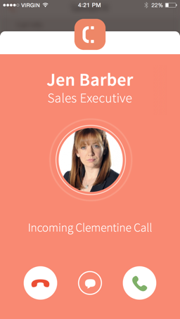
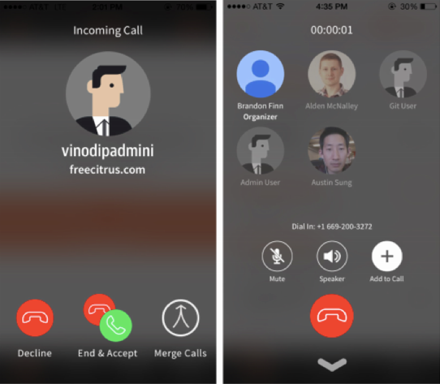
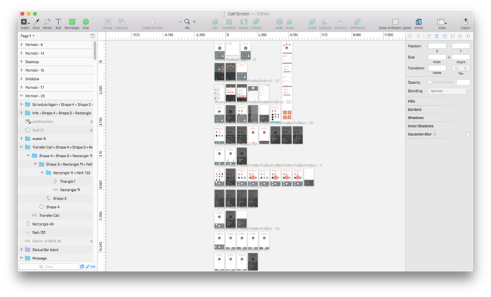
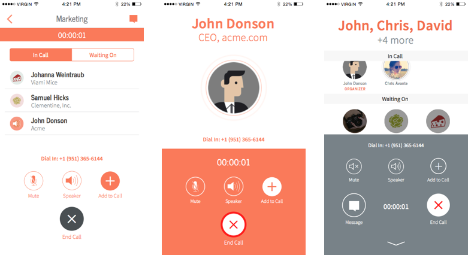
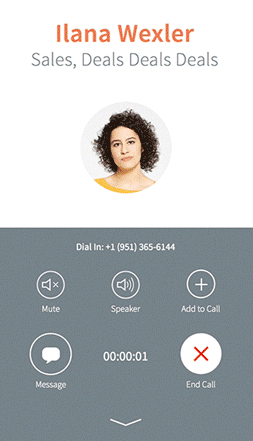
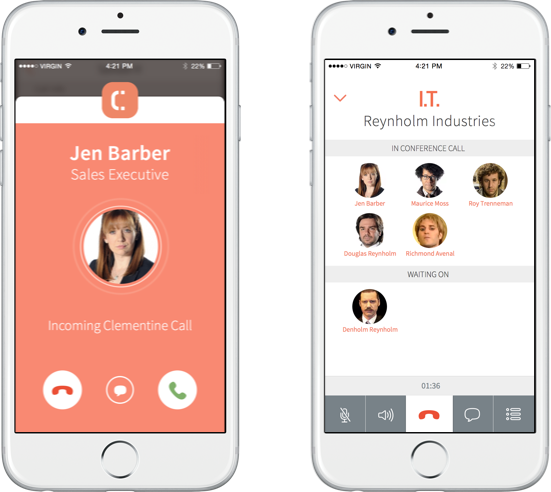
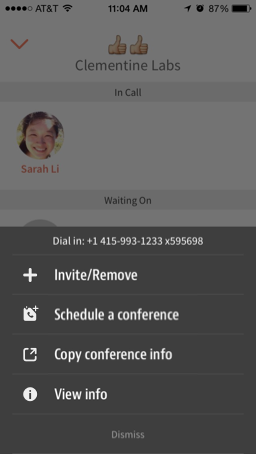

Clementine Conference Calls

Goal
The goal of redesigning the conference call flow (the “hero” feature of Clementine) was to build and sustain trust with customers throughout the entire call experience.
If a customer’s tried different conference call apps, s/he’s probably used to apps that dial a conference line using the customer’s personal phone number. However, one of Clementine’s value propositions is that customers receive their own business line to keep their work and personal lives separate.
Prior to the redesign, Clementine’s conference call screen looked too similar to the iOS phone UI (see below). Customers complained that they weren’t always sure if calls were being made through the app or through their own phone number, especially if they were distracted while using their phone.

We had two goals for the redesign:
- Create a seamless Clementine-branded conference call experience that
- Would be flexible when incorporating additional call features we had on the development roadmap, such as call transferring, a dial pad, and conference rescheduling.
Product Analysis
The landscape of enterprise communication is far-reaching. There are apps that only do text-based communication (e.g., Slack, Pie), those that do text and voice (e.g., Convoi), and those that do voice through another product (e.g., UberConference, Hall).
I looked mainly at telephony apps to get a sense how other products are handling phone calls, especially with multiple people on the line. I also took a look at more consumer-focused communication products that receive a larger scale of customers.
-
 Convoi
Convoi -
 Hangouts
Hangouts -
 Messenger
Messenger -
 Speakeasy
Speakeasy -
 UberConference
UberConference -
 Viber
Viber
General trends I found were that
- There’s a limited number of tasks you can perform when you’re in a call. Many apps don’t let you return to the normal app UI.
- Not many apps delineated who was in the call and who wasn’t.
- The ways in which you could start a conference call varied, but the majority of apps required you to start from a preexisting group, not with an ad hoc group.
Sketching
I sketched out a few ideas to get high-level feedback from the team. Questions I mulled over during sketching were:
- Which call functionalities should be top-level during a call, and which can be hidden?
- Do customers need to be able to always see who’s on a call, or is communicating through voice sufficient?
- How do we strike a balance between making the call experience a cohesive part of the whole product and making it different enough from the rest of the app so customers know for sure whenever they’re in a call?
Mockups

Starting the project, the top priority goal was branding our conference call experience. It was a change our customers were clamoring for and needed to be pushed out in an immediate release.
For the first round of mockups, I focused primarily on this part of the feature. I first tried using the Clementine orange to differentiate the call experience from the rest of the app. However, I quickly learned that using this color to provide contrast would strain the eyes and changing color alone wouldn’t be sufficient. The whole UI needed to adapt to the experience.

The team and I settled on a conference call screen that
- Kept call controls on a bottom panel. This panel minimized as you swiped through the list of participants in the call.
- Organized information primarily by the x-axis. Information in the rest of the app is organized vertically. Using a horizontal structure allowed for more space to present vital information, such as participants and call controls, all at once on the screen.
- Still used style guidelines consistent with the rest of the app, but with a different hierarchy, especially in typography and color.
Prototyping
To test the design decisions I’d made, we as a design team wanted to put the redesign in the hands of users. Building our own prototypes to do this would save time for our engineers and help test our assumptions.
I built prototypes in Pixate, focusing on
- Simulating the way call controls minimized when people scrolled through participants in a call. I wanted to find out if people preferred the majority of the call screen to be either the list of participants or the call controls. The prototype had the screen split 50/50.
- Exploring different ways of adding more features to the call. This would be important for the next round of designs, where it would be the main focus. One of my prototypes (below) explored hiding actions behind the user avatar.

User Testing
Since the conference call experience is such a core part of the Clementine product, it was especially important that we get feedback from our customers and new users. We sought out test users who worked in target industries (finance, healthcare, etc.) and would make frequent work calls.
We learned a great deal about people’s habits and preferences during a conference call. Chiefly, what people consider most important during a call is knowing who’s already joined the call and who they’re waiting on.
Another key insight was that people wanted the call control panel to be as simple as possible. The method to return to the rest of the app during a call and main call controls should be clear and always visible.
Final Design

The final conference call design incorporated much of the information we, our customers, and test users found to be key to a successful call experience:
- Attention-grabbing, branded incoming and outgoing call screens, so customers know without a doubt when they’re making Clementine calls
- Call controls that are clear and easy to access
- Information about participants that can be seen at a glance
- UI patterns consistent with the rest of the app, but presented with enough contrast to differentiate the experience
- A seamless experience from the start of a call to its finish. This means that customers should be able to initiate a call within any reasonable context in the app, whether from a chat thread, group, call history, etc.
The design also incorporated elements of other ongoing projects at Clementine, including our new iconography and universal navigation menu (below). This new menu allowed for greater flexibility for future feature development in calls, as well as elsewhere in the product.

Next Steps & Lessons Learned
This was one of my first projects at Clementine, and looking back at it now, I definitely wish I could have had more time to polish things up. However after working on a very lean, fast-paced team, I know now that the product needs to ship and that I can’t always be 100% satisfied with the outcome. The important thing is that the design solved the problems at hand and our customers needs were met.
The project also forced my design process to be much more rigorous than it had been, especially with exploring as many different ideas as possible at the outset and making sure our engineers were delivered prototypes at crucial development stages. Before incorporating prototypes into the process, we ran into issues, such as overflow text not animating as they were described in specs and the minimizing of the call control panel not behaving as expected.
As the Clementine product became more complex, we as a design team needed to build prototypes to accurately communicate our design choices. This project was the turning point.
Something I’d definitely like to spend more time on now is making transitions between all the screens smoother. There are a lot of moving parts in the conference call flow: picking contacts → starting the call → being in the call → ending the call. We prioritized the in-call experience during this project, so there’s still more thinking to be done beyond just that part.